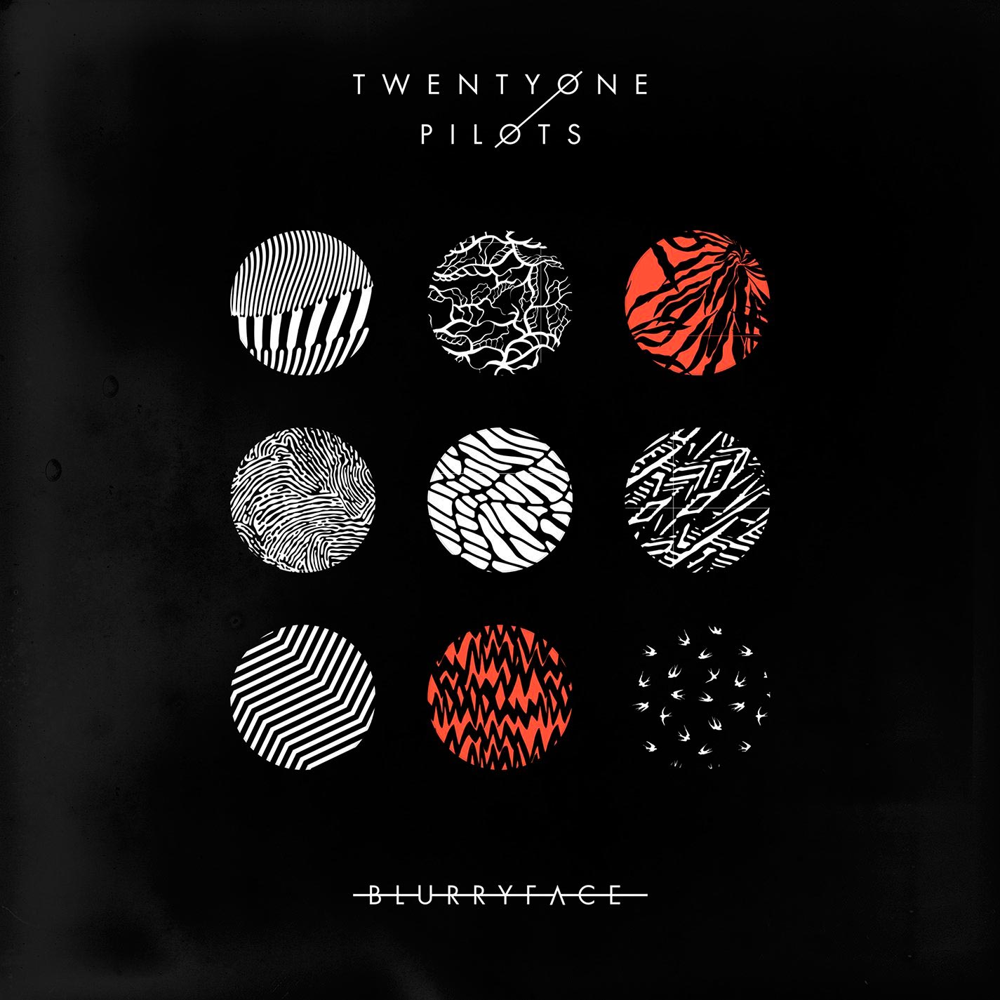
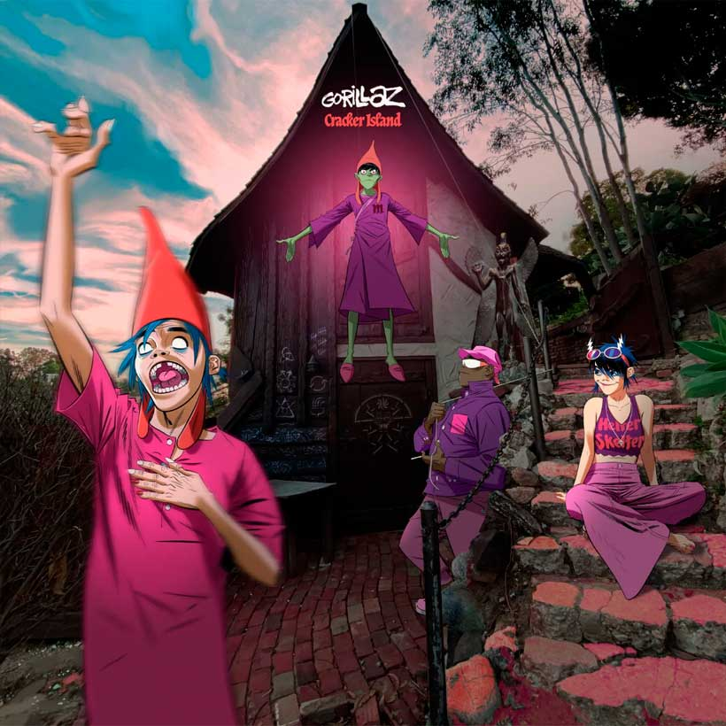
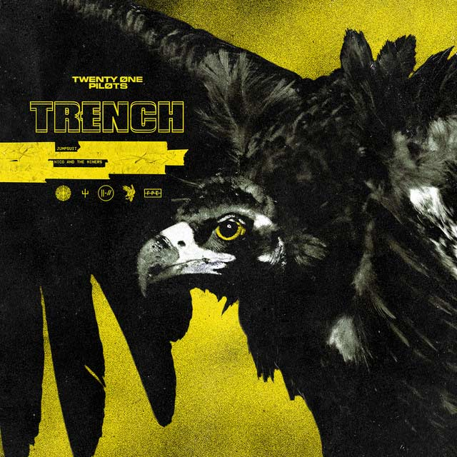

¡Bienvenidos a nuestra sección de reseñas de álbumes de rock, rock alternativo e indie! Sumérgete en el fascinante mundo de la música alternativa y descubre las últimas novedades y los clásicos imprescindibles de estos géneros. Desde las poderosas guitarras del rock clásico hasta las innovadoras propuestas del indie más vanguardista, exploramos la diversidad y la creatividad de la escena musical contemporánea. Únete a nosotros para descubrir nuevos sonidos, redescubrir álbumes icónicos y explorar la influencia duradera de estos géneros en la cultura musical.
three cheers for sweet revenge-My chemical Romance

En este album se nos cuenta una historia de amor pero tambien de venganza. Mientras vas avanzando en el album se puede como el personaje principal, luego de que el y su alma gemela, mueren en un tiroteo, para luego tomar venganza desde el mas alla.
blurryface-twenty one pilots
En este album, se nos presenta tres personajes; primero tyler, que ademas de ser el vocalista, este tiene depresion y esta es el segundo personaje, llamada Blurryface, y por ultimo Josh que ademas de ser el mejor amigo de tyler y el baterista, este es el que ayuda a tyler a luchar contra blurryface para que este no lo controle. Podemos ver un buen manejo de los miedos del tyler, como por ejemplo el de no querer crecer y volver a ser un niño, siendo estos miedos quienes hacen que blurryface exista.
cracker island-Gorillaz
En este nuevo album de gorillaz, nos traen algo distinto a lo que nos tenian acostumbrados, siendo por lo general polemicos debido a que siempre tenian un tono de protesta, pero este album conserva ese estilo, siendo un acto de rebeldia contra sus propios oyentes, trayendoles algo muy distinto a lo que ellos representan.
trench-twenty one pilots
En este album continua la historia que nos dejaron en blurryface, pero esta vez no se trata de la caida de tyler en sus propios miedos, en cambio, se trata del intento de superacion de estos miedos luchando contra blurryface.